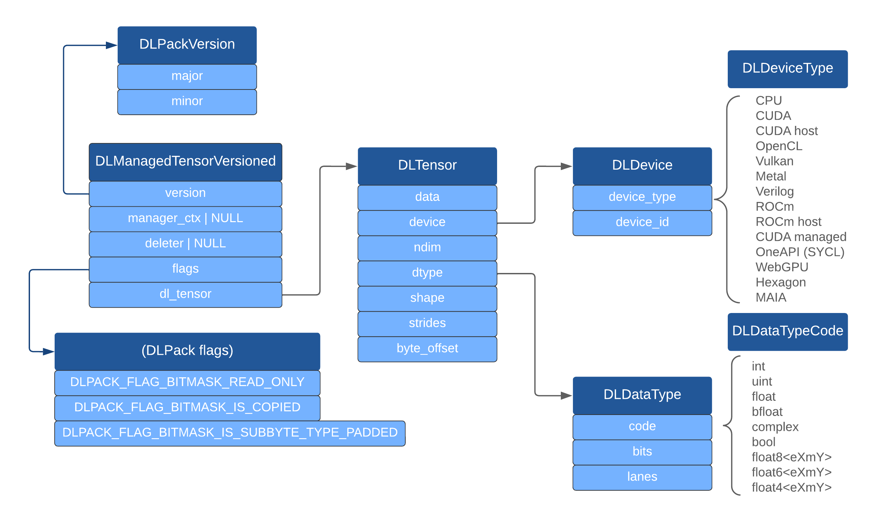

Python Specification for DLPack¶
The Python specification for DLPack is a part of the Python array API standard. More details about the spec can be found under the Data interchange mechanisms page.
Syntax for data interchange with DLPack¶
The array API will offer the following syntax for data interchange:
A
from_dlpack()function, which accepts any (array) object with the two DLPack methods implemented (see below) and uses them to construct a new array containing the data from the input array.__dlpack__()and__dlpack_device__()methods on the array object, which will be called from withinfrom_dlpack(), to query what device the array is on (may be needed to pass in the correct stream, e.g. in the case of multiple GPUs) and to access the data.
Semantics¶
DLPack describes the memory layout of dense, strided, n-dimensional arrays.
When a user calls y = from_dlpack(x), the library implementing x (the
“producer”) will provide access to the data from x to the library
containing from_dlpack (the “consumer”). If possible, this must be
zero-copy (i.e. y will be a view on x). If not possible, that library
may flag this and make a copy of the data. In both cases:
The producer keeps owning the memory of
x(andyif a copy is made)ymay or may not be a view, therefore the user must keep the recommendation to avoid mutatingyin mind - see Copy-view behavior and mutability.Both
xandymay continue to be used just like arrays created in other ways.
If an array that is accessed via the interchange protocol lives on a device that
the requesting (consumer) library does not support, it is recommended to raise a
BufferError, unless an explicit copy is requested (see below) and the producer
can support the request.
Stream handling through the stream keyword applies to CUDA and ROCm (perhaps
to other devices that have a stream concept as well, however those haven’t been
considered in detail). The consumer must pass the stream it will use to the
producer; the producer must synchronize or wait on the stream when necessary.
In the common case of the default stream being used, synchronization will be
unnecessary so asynchronous execution is enabled.
Starting Python array API standard v2023, a copy can be explicitly requested (or
disabled) through the new copy argument of from_dlpack(). When a copy is
made, the producer must set the DLPACK_FLAG_BITMASK_IS_COPIED bit flag.
It is also possible to request cross-device copies through the new device
argument, though the v2023 standard only mandates the support of kDLCPU.
Implementation¶
Note that while this API standard largely tries to avoid discussing implementation details, some discussion and requirements are needed here because data interchange requires coordination between implementers on, e.g., memory management.
DLPack diagram. Dark blue are the structs it defines, light blue struct members, gray text enum values of supported devices and data types.
Starting Python array API standard v2023, a new max_version argument
is added to __dlpack__ for the consumer to signal the producer the
maximal supported DLPack version. Starting DLPack 1.0, the DLManagedTensorVersioned
struct should be used and the existing DLManagedTensor struct is considered
deprecated, though a library should try to support both during the transition
period if possible.
Note
In the rest of this document, DLManagedTensorVersioned and DLManagedTensor
are treated as synonyms, assuming a proper handling of max_version has been
done to choose the right struct. As far as the capsule name is concerned,
when DLManagedTensorVersioned is in use the capsule names dltensor
and used_dltensor will need a _versioned suffix.
The __dlpack__ method will produce a PyCapsule containing a
DLManagedTensor, which will be consumed immediately within
from_dlpack - therefore it is consumed exactly once, and it will not be
visible to users of the Python API.
The producer must set the PyCapsule name to "dltensor" so that
it can be inspected by name, and set PyCapsule_Destructor that calls
the deleter of the DLManagedTensor when the "dltensor"-named
capsule is no longer needed.
The consumer must transer ownership of the DLManagedTensor from the
capsule to its own object. It does so by renaming the capsule to
"used_dltensor" to ensure that PyCapsule_Destructor will not get
called (ensured if PyCapsule_Destructor calls deleter only for
capsules whose name is "dltensor"), but the deleter of the
DLManagedTensor will be called by the destructor of the consumer
library object created to own the DLManagedTensor obtained from the
capsule. Below is an example of the capsule deleter written in the Python
C API which is called either when the refcount on the capsule named
"dltensor" reaches zero or the consumer decides to deallocate its array:
static void dlpack_capsule_deleter(PyObject *self){
if (PyCapsule_IsValid(self, "used_dltensor")) {
return; /* Do nothing if the capsule has been consumed. */
}
DLManagedTensor *managed = (DLManagedTensor *)PyCapsule_GetPointer(self, "dltensor");
if (managed == NULL) {
PyErr_WriteUnraisable(self);
return;
}
/* the spec says the deleter can be NULL if there is no way for the caller to provide a reasonable destructor. */
if (managed->deleter) {
managed->deleter(managed);
}
}
Note: the capsule names "dltensor" and "used_dltensor" must be
statically allocated.
The DLManagedTensor deleter must ensure that sharing beyond Python
boundaries is possible, this means that the GIL must be acquired explicitly
if it uses Python objects or API.
In Python, the deleter usually needs to Py_DECREF() the original owner
and free the DLManagedTensor allocation.
For example, NumPy uses the following code to ensure sharing with arbitrary
non-Python code is safe:
static void array_dlpack_deleter(DLManagedTensor *self)
{
/*
* Leak the Python object if the Python runtime is not available.
* This can happen if the DLPack consumer destroys the tensor late
* after Python runtime finalization (for example in case the tensor
* was indirectly kept alive by a C++ static variable).
*/
if (!Py_IsInitialized()) {
return;
}
PyGILState_STATE state = PyGILState_Ensure();
PyObject *array = (PyObject *)self->manager_ctx;
// This will also free the shape and strides as it's one allocation.
PyMem_Free(self);
Py_XDECREF(array);
PyGILState_Release(state);
}
When the strides field in the DLTensor struct is NULL, it indicates a
row-major compact array. If the array is of size zero, the data pointer in
DLTensor should be set to either NULL or 0.
For further details on DLPack design and how to implement support for it, refer to github.com/dmlc/dlpack.
Warning
DLPack contains a device_id, which will be the device
ID (an integer, 0, 1, ...) which the producer library uses. In
practice this will likely be the same numbering as that of the
consumer, however that is not guaranteed. Depending on the hardware
type, it may be possible for the consumer library implementation to
look up the actual device from the pointer to the data - this is
possible for example for CUDA device pointers.
It is recommended that implementers of this array API consider and document
whether the device attribute of the array returned from from_dlpack is
guaranteed to be in a certain order or not.
Reference Implementations¶
Several Python libraries have adopted this standard using Python C API, C++, Cython, ctypes, cffi, etc:
NumPy: Python C API
CuPy: Cython
Tensorflow: C++, Python wrapper using Python C API, XLA
PyTorch: C++, Python wrapper using Python C API
MXNet: ctypes
mpi4py: Cython
Paddle: C++, Python wrapper using Python C API
Hidet: ctypes